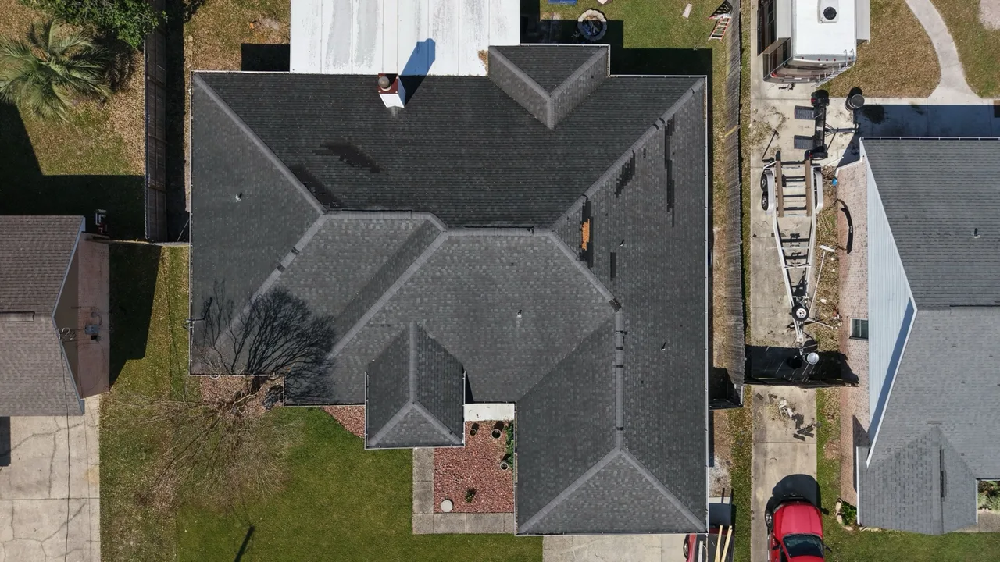

A clear view of what changed.
EAZ Drones offers construction-progress photography and aerial video for builders, developers, property owners, and project managers around Navarre, Gulf Breeze, Pensacola, and Pensacola Beach. Plan a single visit or recurring coverage around your project milestones.
Use dated site imagery to share updates with clients, keep a visual project record, and show changes between visits. You work directly with Andrew, the owner and FAA Part 107 pilot, to define the coverage before the first flight.
Recurring site visits.
Discuss weekly, twice-monthly, or milestone-based visits. The quote sets the number of visits, site coverage, and delivery schedule so the scope is clear.
Photos and video.
Request edited aerial stills, aerial video, or a combination. Agree on useful overview positions and points of interest for the visual record.
A consistent plan.
Identify the views you want to compare over time. Repeat viewpoints where safe and practical, accounting for changing site conditions and airspace.
Updates with context.
Define file naming, visit dates, and delivery needs at the quote stage so the imagery fits the way your team shares project updates.
Existing aerial work.
A roofing image from EAZ Drones shows the detail available in overhead property documentation. Your construction capture plan is scoped around the views and updates your team needs.

What the image shows.
This original EAZ Drones image records the roof layout, visible shingle surfaces, and the property's immediate setting in one overhead view. It demonstrates aerial property documentation without claiming measurements or a structural diagnosis.
Planning a progress record.
For construction, agree on the views your team needs before the first visit. Later visits can record visible changes from comparable positions when safe and practical. The roofing example above shows a single capture; your progress record builds across the visits you request.
Start with the site.
Send the project details.
Share the address or site pin, approximate size, project stage, preferred visit cadence, and expected project duration.
Agree on the coverage.
Andrew reviews access and flight requirements, then scopes the views, media, visit frequency, and delivery format with you.
Plan the first visit.
Coordinate site access and scheduling before capture. Flight timing depends on weather, airspace, and safe conditions at the site.
Build the visual record.
Use each visit's imagery for project updates, then adjust the capture plan as the work moves to its next stage.
See the current construction-progress packages for published pricing and inclusions. A custom quote confirms the scope for your site.
Local coverage. Site-specific planning.
Based in Navarre, EAZ Drones serves projects in Gulf Breeze, Pensacola and Pensacola Beach, and the surrounding area. Send the exact site address so access, travel, and flight requirements can be checked.
Progress coverage provides visual documentation. Structural assessments, certified surveys, mapping products, and specialized measurements require their own agreed scope and are not implied by a photography request.
Before the first flight.
What is construction-progress drone photography?
It is aerial photo coverage of a site at agreed stages or intervals. Repeat visits can give your team a dated visual record of visible changes, with the views and deliverables defined in advance.
How often should a construction site be photographed?
The useful interval depends on how quickly work changes and who needs updates. Weekly, twice-monthly, and milestone-based coverage can be discussed. Share your project stage and reporting needs to scope the right cadence.
What will I receive after a progress visit?
The quote specifies the number of aerial photos, whether video is included, file delivery, and turnaround. Published packages are on the services page; custom projects are scoped individually.
Can you return to the same viewpoints?
Recurring coverage can be planned around agreed overview positions. The pilot may need to adjust a viewpoint for weather, airspace, access, or a change in site conditions.
Can you fly at every site in Pensacola or near the beach?
Each address needs an airspace and site review. A requested date is confirmed only after the flight requirements, access, and safe operating conditions are assessed.
How much does construction-progress photography cost?
Review the published single-visit and recurring progress packages. Site size, visit frequency, requested media, travel, and delivery needs determine the agreed scope. Request a quote before scheduling.
What information do you need for a quote?
Send the address, approximate site size, project stage, requested photos or video, preferred frequency, target start date, and expected project duration.
Plan your first progress visit.
Send the site address and how often you need updates. Andrew will scope the coverage with you.
Need listing or rental photography instead? Explore property photography and video.